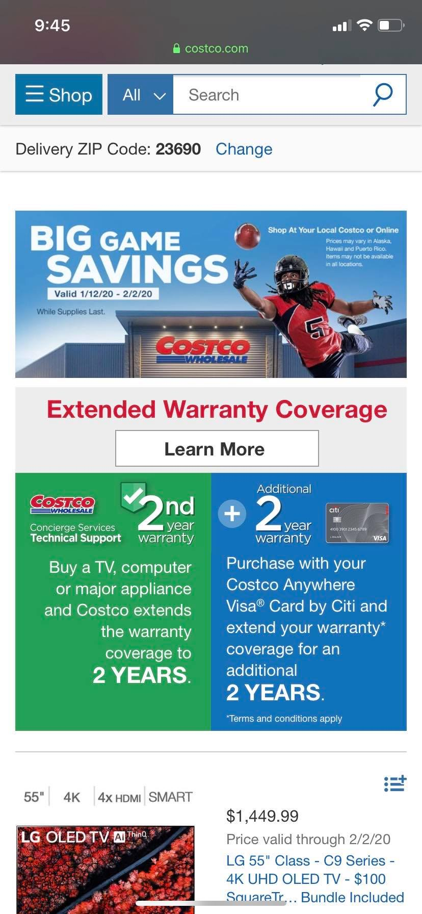

Visual Hierarchy
 News usually create their websites, in ways where the user can see
the importance news in the first pages without scroll down. We can seee
this example in the Fox New. Link
News usually create their websites, in ways where the user can see
the importance news in the first pages without scroll down. We can seee
this example in the Fox New. Link
PARC: Proximity
 Proximity give you the option to moving things closer or farther
in that way they can have an organized look. Magazines is an example of
this. Link
Proximity give you the option to moving things closer or farther
in that way they can have an organized look. Magazines is an example of
this. Link
The Rule of Thirds
 This rule refers to a 3 by 3 grid that fits on top of any image. Using the rid-shaped rule helps you to undertand the places on an imagen. Link